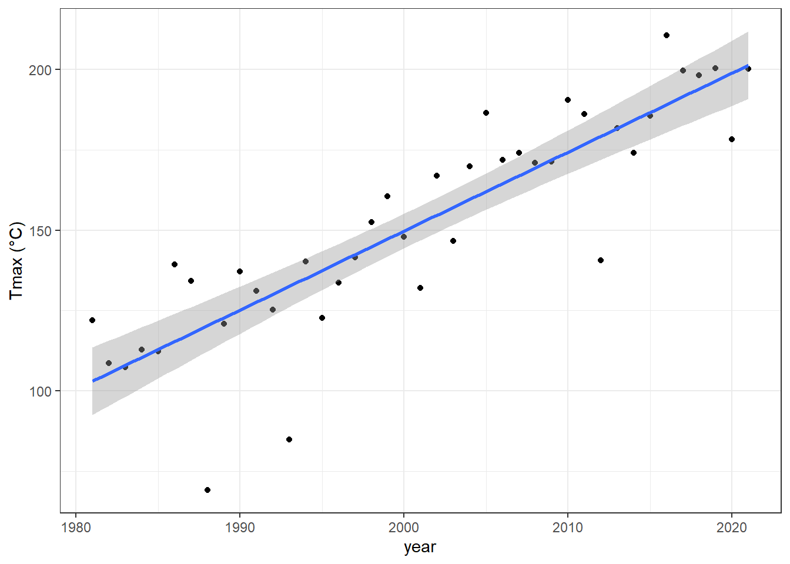
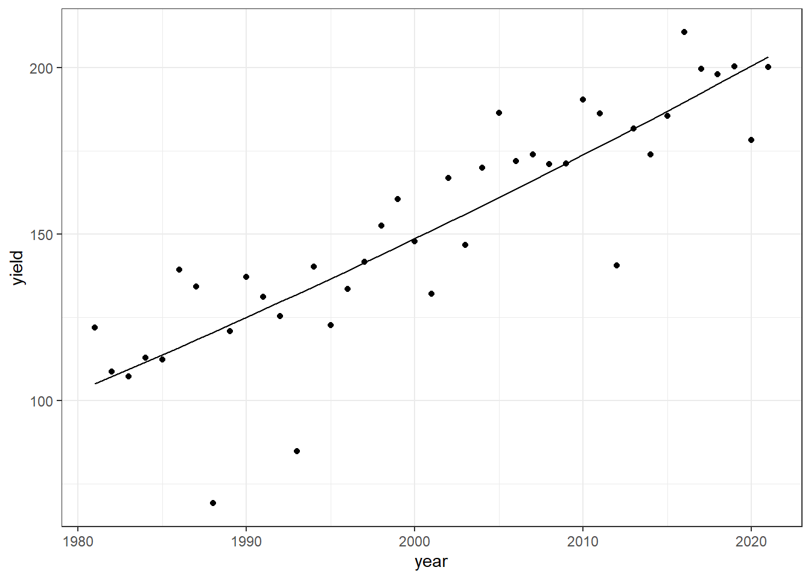
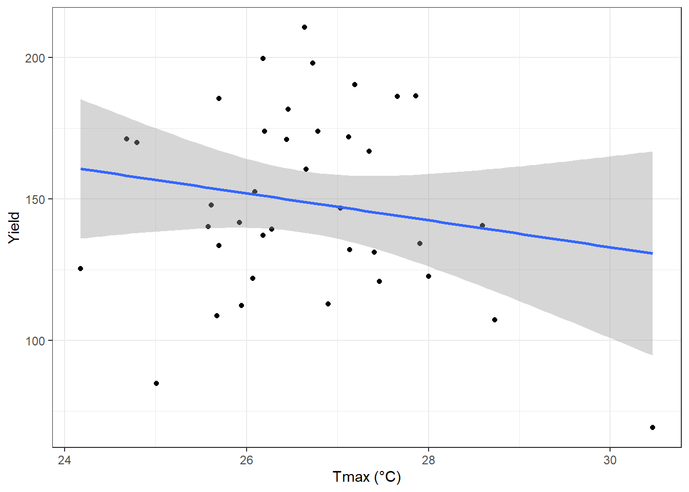
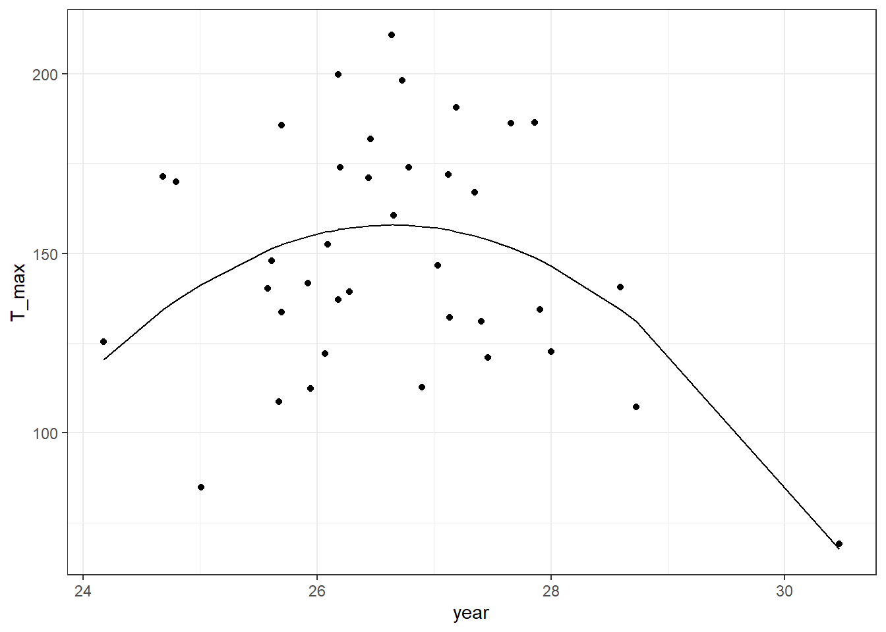
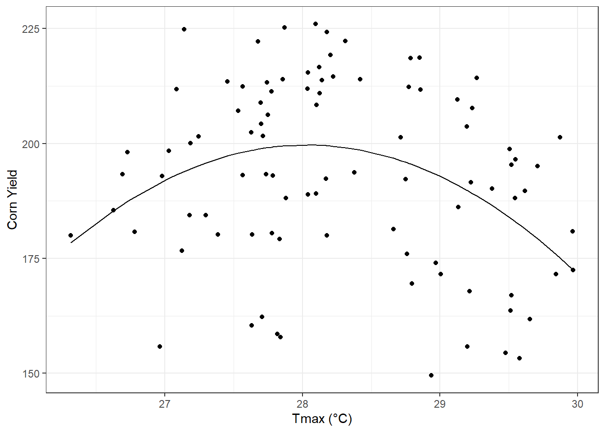
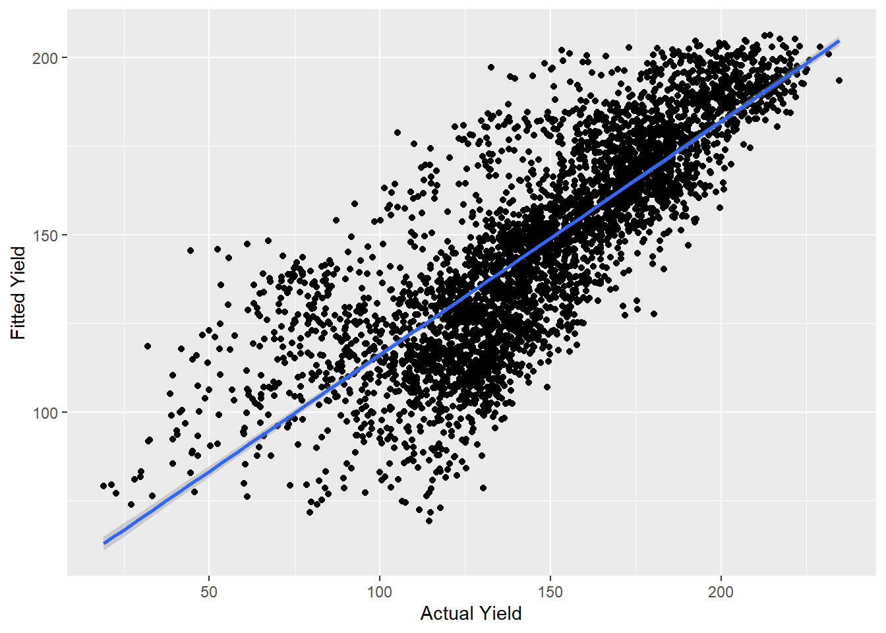
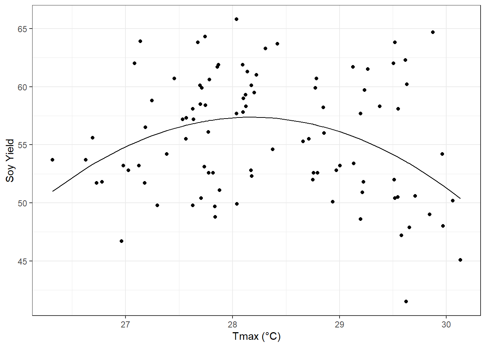

Chapter 4 Regressions
Case Study: Iowa Corn Yields
4.1 Weather Data Analysis
4.1.1 Load PRISM daily maximum temperatures
# daily max temperature
# dimensions: counties x days x years
prism <- readMat("Data/Chapter_5/prismiowa.mat")
# look at county #1
t_1981_c1 <- prism$tmaxdaily.iowa[1,,1]
t_1981_c1[366]## [1] NaNplot(1:366, t_1981_c1, type = "l")
ggplot() +
geom_line(mapping = aes(x=1:366, y = t_1981_c1)) +
theme_bw() +
xlab("day of year") +
ylab("daily maximum temperature (°C)") +
ggtitle("Daily Maximum Temperature, Iowa County #1")
# assign dimension names to tmax matrix
dimnames(prism$tmaxdaily.iowa) <- list(prism$COUNTYFP, 1:366, prism$years)
# converted 3d matrix into a data frame
tmaxdf <- as.data.frame.table(prism$tmaxdaily.iowa)
# relabel the columns
colnames(tmaxdf) <- c("countyfp","doy","year","tmax")
tmaxdf <- tibble(tmaxdf)4.2 Temperature trends
4.2.1 Summer temperature trends: Winneshiek County
#convert to numeric
tmaxdf$doy <- as.numeric(tmaxdf$doy)
tmaxdf$year <- as.numeric(as.character(tmaxdf$year))
#filter by summer
winnesummer <- tmaxdf %>%
filter(countyfp==191 & doy >= 152 & doy <= 243) %>%
group_by(year) %>%
summarize(meantmax = mean(tmax))
#plot data
ggplot(winnesummer, mapping = aes(x = year, y = meantmax)) +
geom_point() +
theme_bw() +
labs(x = "year", y = "Tmax (°C)") +
geom_smooth(method = lm)
#linear model
lm_summertmax <- lm(meantmax ~ year, winnesummer)
summary(lm_summertmax)##
## Call:
## lm(formula = meantmax ~ year, data = winnesummer)
##
## Residuals:
## Min 1Q Median 3Q Max
## -2.5189 -0.7867 -0.0341 0.6859 3.7415
##
## Coefficients:
## Estimate Std. Error t value Pr(>|t|)
## (Intercept) 41.57670 36.44848 1.141 0.262
## year -0.00747 0.01823 -0.410 0.684
##
## Residual standard error: 1.232 on 36 degrees of freedom
## Multiple R-squared: 0.004644, Adjusted R-squared: -0.02301
## F-statistic: 0.168 on 1 and 36 DF, p-value: 0.68444.2.2 Winter Temperatures - Winneshiek County
#filter by winter
winnewinter <- tmaxdf %>%
filter(countyfp==191 & (doy <= 59 | doy >= 335) & !is.na(tmax)) %>%
group_by(year) %>%
summarize(meantmax = mean(tmax))
#plot data
ggplot(winnewinter, mapping = aes(x = year, y = meantmax)) +
geom_point() +
theme_bw() +
labs(x = "year", y = "Tmax (°C)") +
geom_smooth(method = lm)
#linear model
lm_wintertmax <- lm(meantmax ~ year, winnewinter)
summary(lm_wintertmax)4.3 Multiple regression – Quadratic time trend
#create quadratic value
winnewinter$yearsq <- winnewinter$year^2
#quadratic model
lm_wintertmaxquad <- lm(meantmax ~ year + yearsq, winnewinter)
summary(lm_wintertmaxquad)##
## Call:
## lm(formula = meantmax ~ year + yearsq, data = winnewinter)
##
## Residuals:
## Min 1Q Median 3Q Max
## -3.3539 -1.2985 -0.2813 1.4055 4.2620
##
## Coefficients:
## Estimate Std. Error t value Pr(>|t|)
## (Intercept) -1.086e+04 1.238e+04 -0.877 0.386
## year 1.085e+01 1.239e+01 0.876 0.387
## yearsq -2.710e-03 3.097e-03 -0.875 0.388
##
## Residual standard error: 2.051 on 35 degrees of freedom
## Multiple R-squared: 0.02694, Adjusted R-squared: -0.02867
## F-statistic: 0.4845 on 2 and 35 DF, p-value: 0.6201winnewinter$fitted <- lm_wintertmaxquad$fitted.values
#plot data
ggplot(winnewinter) +
geom_point(mapping = aes(x = year, y = meantmax)) +
geom_line(mapping = aes(x = year, y = fitted)) +
theme_bw() +
labs(x = "year", y = "Tmax (°C)")
4.4 Download NASS corn yield data
# set our API key with NASS
nassqs_auth(key = "5B47588E-E354-32FE-A42C-2789B2935796 ")
# parameters to query on
params <- list(commodity_desc = "CORN", util_practice_desc = "GRAIN", prodn_practice_desc = "ALL PRODUCTION PRACTICES", year__GE = 1981, state_alpha = "IA")
# download
cornyieldsall <- nassqs_yields(params)
cornyieldsall$county_ansi <- as.numeric(cornyieldsall$county_ansi)
cornyieldsall$yield <- as.numeric(cornyieldsall$Value)
# clean and filter this dataset
cornyields <- select(cornyieldsall, county_ansi, county_name, yield, year) %>%
filter(!is.na(county_ansi) & !is.na(yield))
cornyields <- tibble(cornyields)4.5 Fit and Plot Linear time trend - Winneshiek County, IA
#filter data to Winneshiek county
winneyields <- cornyields %>%
filter(county_name == 'WINNESHIEK')
#plot data
ggplot(winneyields, mapping = aes(x = year, y = yield)) +
geom_point() +
theme_bw() +
labs(x = "year", y = "Tmax (°C)") +
geom_smooth(method = lm)
#linear model
lm_winnieyields <- lm(yield~ year, winneyields)
summary(lm_winnieyields)##
## Call:
## lm(formula = yield ~ year, data = winneyields)
##
## Residuals:
## Min 1Q Median 3Q Max
## -51.163 -1.841 2.363 9.437 24.376
##
## Coefficients:
## Estimate Std. Error t value Pr(>|t|)
## (Intercept) -4763.290 448.286 -10.63 4.46e-13 ***
## year 2.457 0.224 10.96 1.77e-13 ***
## ---
## Signif. codes: 0 '***' 0.001 '**' 0.01 '*' 0.05 '.' 0.1 ' ' 1
##
## Residual standard error: 16.97 on 39 degrees of freedom
## Multiple R-squared: 0.7551, Adjusted R-squared: 0.7488
## F-statistic: 120.2 on 1 and 39 DF, p-value: 1.767e-13The adjusted R-squared of 0.7488 shows there is a significant, but not ironclad, linear relationship between year and yield.
4.6 Fit and Plot quadratic time trend - Winneshiek County, IA
#create quadratic valye
winneyields$yearsq_yield <- (winneyields$year)^2
#fit quadratic model
lm_winneyields_quad <- lm(yield ~ year + yearsq_yield, winneyields)
summary(lm_winneyields_quad)##
## Call:
## lm(formula = yield ~ year + yearsq_yield, data = winneyields)
##
## Residuals:
## Min 1Q Median 3Q Max
## -51.384 -3.115 1.388 9.743 25.324
##
## Coefficients:
## Estimate Std. Error t value Pr(>|t|)
## (Intercept) 2.583e+04 8.580e+04 0.301 0.765
## year -2.812e+01 8.576e+01 -0.328 0.745
## yearsq_yield 7.641e-03 2.143e-02 0.357 0.723
##
## Residual standard error: 17.17 on 38 degrees of freedom
## Multiple R-squared: 0.7559, Adjusted R-squared: 0.7431
## F-statistic: 58.84 on 2 and 38 DF, p-value: 2.311e-12winneyields$fitted <- lm_winneyields_quad$fitted.values
#plot model
ggplot(winneyields) +
geom_point(mapping = aes(x = year, y = yield)) +
geom_line(mapping = aes(x = year, y = winneyields$fitted)) +
theme_bw() +
labs(x = "year", y = "yield")
The adjusted R-squared of 0.743 shows there is a significant, but not ironclad, quadratic relationship between year and yield.
4.7 Summer Temperature and yields for the Winneshiek County time series.
summer_yields <- left_join(winnesummer, winneyields)
#Linear Trend
ggplot(summer_yields, mapping = aes(x = meantmax, y = yield)) +
geom_point() +
theme_bw() +
labs(x = "Tmax (°C)", y = "Yield") +
geom_smooth(method = lm)
lm_summeryield <- lm(yield~ meantmax, summer_yields)
summary(lm_summeryield)##
## Call:
## lm(formula = yield ~ meantmax, data = summer_yields)
##
## Residuals:
## Min 1Q Median 3Q Max
## -71.96 -19.85 -3.19 24.64 61.72
##
## Coefficients:
## Estimate Std. Error t value Pr(>|t|)
## (Intercept) 275.876 118.335 2.331 0.0255 *
## meantmax -4.763 4.438 -1.073 0.2902
## ---
## Signif. codes: 0 '***' 0.001 '**' 0.01 '*' 0.05 '.' 0.1 ' ' 1
##
## Residual standard error: 32.88 on 36 degrees of freedom
## Multiple R-squared: 0.03101, Adjusted R-squared: 0.004098
## F-statistic: 1.152 on 1 and 36 DF, p-value: 0.2902#Quadratic Trend
summer_yields$tempsq_summer <-(summer_yields$meantmax)^2
lm_summeryields_quad <- lm(yield ~ meantmax + tempsq_summer, summer_yields)
summary(lm_summeryields_quad)##
## Call:
## lm(formula = yield ~ meantmax + tempsq_summer, data = summer_yields)
##
## Residuals:
## Min 1Q Median 3Q Max
## -56.587 -22.262 -0.982 22.409 52.798
##
## Coefficients:
## Estimate Std. Error t value Pr(>|t|)
## (Intercept) -4223.604 1446.639 -2.920 0.00609 **
## meantmax 328.918 107.068 3.072 0.00410 **
## tempsq_summer -6.173 1.979 -3.119 0.00362 **
## ---
## Signif. codes: 0 '***' 0.001 '**' 0.01 '*' 0.05 '.' 0.1 ' ' 1
##
## Residual standard error: 29.5 on 35 degrees of freedom
## Multiple R-squared: 0.2417, Adjusted R-squared: 0.1984
## F-statistic: 5.579 on 2 and 35 DF, p-value: 0.007887summer_yields$fitted <- lm_summeryields_quad$fitted.values
ggplot(summer_yields) +
geom_point(mapping = aes(x = meantmax, y = yield)) +
geom_line(mapping = aes(x = meantmax, y = fitted)) +
theme_bw() +
labs(x = "year", y = "T_max")
The linear adjusted R-squared of 0.0041 indicates there is not a significant linear relationship between yield and average summer temperature. However, using a quadratic regression with T_max^2 increases the Adjusted r-squared to 0.1984, indicating a (relatively) more significant relationship between yield and average summer temperature.
4.8 2018 Cross-Section relationship between temperature and yield – Winneshiek County
#filter data
yields_18 <- cornyields %>%
filter(year==2018) %>%
group_by(county_name) %>%
unique() %>%
filter(!is.na(county_ansi))
summer_county_18 <- tmaxdf %>%
group_by(countyfp) %>%
filter(year==2018) %>%
filter(doy >= 152 & doy <=243) %>%
summarize(meatmax=mean(tmax)) %>%
rename(county_ansi = "countyfp")
summer_county_18$county_ansi <- as.numeric(as.character(summer_county_18$county_ansi))
county_summer_yield <- left_join(yields_18,summer_county_18, by='county_ansi')#fitted values
county_summer_yield$tempsq_county_summer <-(county_summer_yield$meatmax)^2
lm_countysummeryields_quad <- lm(yield ~ meatmax + tempsq_county_summer, county_summer_yield)
summary(lm_summeryields_quad)##
## Call:
## lm(formula = yield ~ meantmax + tempsq_summer, data = summer_yields)
##
## Residuals:
## Min 1Q Median 3Q Max
## -56.587 -22.262 -0.982 22.409 52.798
##
## Coefficients:
## Estimate Std. Error t value Pr(>|t|)
## (Intercept) -4223.604 1446.639 -2.920 0.00609 **
## meantmax 328.918 107.068 3.072 0.00410 **
## tempsq_summer -6.173 1.979 -3.119 0.00362 **
## ---
## Signif. codes: 0 '***' 0.001 '**' 0.01 '*' 0.05 '.' 0.1 ' ' 1
##
## Residual standard error: 29.5 on 35 degrees of freedom
## Multiple R-squared: 0.2417, Adjusted R-squared: 0.1984
## F-statistic: 5.579 on 2 and 35 DF, p-value: 0.007887county_summer_yield$fitted <- lm_countysummeryields_quad$fitted.values#construct plot
ggplot(county_summer_yield) +
geom_point(mapping = aes(x = meatmax, y = yield)) +
geom_line(mapping = aes(x = meatmax, y = fitted)) +
theme_bw() +
labs(x = "Tmax (°C)", y = "Corn Yield")
The adjusted R-squared of 0.1984 shows that a quadratic regression isn’t terrible, but doesn’t quite fit. Overall, both the regression and overall plot indicates that the highest yields take place around a t_max of 28.
4.9 Panel Graphs for All Iowa Counties
#group by counties
county_yield_panel <- cornyieldsall %>%
group_by(county_name) %>%
unique() %>%
filter(!is.na(county_ansi))
#filter by summer
county_summer_panel <- tmaxdf %>%
group_by(countyfp) %>%
filter(doy >= 152 & doy <= 243) %>%
summarize(meantmax = mean(tmax)) %>%
rename(county_ansi = "countyfp")
#creating panel dataset
county_summer_panel$county_ansi <- as.numeric(as.character(county_summer_panel$county_ansi))
county_summeryield_panel <- left_join(county_yield_panel,county_summer_panel, by='county_ansi')
county_summeryield_panel <- subset(county_summeryield_panel, select = c(county_ansi, yield, meantmax, year))
county_summeryield_panel$county_ansi <- as.factor(county_summeryield_panel$county_ansi)
county_summeryield_panel$meantmaxsq <- county_summeryield_panel$meantmax^2
lm_county_summeryield_panel <- lm(yield ~ county_ansi + meantmax + meantmaxsq + year, county_summeryield_panel)
summary(lm_county_summeryield_panel)##
## Call:
## lm(formula = yield ~ county_ansi + meantmax + meantmaxsq + year,
## data = county_summeryield_panel)
##
## Residuals:
## Min 1Q Median 3Q Max
## -101.016 -9.576 3.141 14.498 52.720
##
## Coefficients: (2 not defined because of singularities)
## Estimate Std. Error t value Pr(>|t|)
## (Intercept) -4.447e+03 5.773e+01 -77.031 < 2e-16 ***
## county_ansi3 -4.038e+00 4.822e+00 -0.838 0.402346
## county_ansi5 1.137e+01 4.762e+00 2.387 0.017012 *
## county_ansi7 -1.875e+01 4.791e+00 -3.913 9.27e-05 ***
## county_ansi9 9.961e+00 4.762e+00 2.092 0.036510 *
## county_ansi11 1.214e+01 4.762e+00 2.550 0.010815 *
## county_ansi13 1.400e+01 4.762e+00 2.940 0.003305 **
## county_ansi15 1.794e+01 4.762e+00 3.767 0.000168 ***
## county_ansi17 1.907e+01 4.762e+00 4.006 6.30e-05 ***
## county_ansi19 1.618e+01 4.762e+00 3.398 0.000687 ***
## county_ansi21 1.527e+01 4.762e+00 3.207 0.001352 **
## county_ansi23 1.620e+01 4.762e+00 3.403 0.000674 ***
## county_ansi25 1.611e+01 4.762e+00 3.384 0.000721 ***
## county_ansi27 1.444e+01 4.762e+00 3.032 0.002443 **
## county_ansi29 7.471e+00 4.762e+00 1.569 0.116740
## county_ansi31 1.950e+01 4.762e+00 4.095 4.30e-05 ***
## county_ansi33 1.259e+01 4.762e+00 2.643 0.008249 **
## county_ansi35 1.961e+01 4.791e+00 4.094 4.32e-05 ***
## county_ansi37 1.136e+01 4.762e+00 2.385 0.017131 *
## county_ansi39 -2.391e+01 4.854e+00 -4.926 8.76e-07 ***
## county_ansi41 1.311e+01 4.762e+00 2.752 0.005948 **
## county_ansi43 1.667e+01 4.762e+00 3.502 0.000468 ***
## county_ansi45 1.564e+01 4.762e+00 3.285 0.001027 **
## county_ansi47 1.308e+01 4.762e+00 2.748 0.006032 **
## county_ansi49 1.140e+01 4.762e+00 2.394 0.016730 *
## county_ansi51 -1.835e+01 4.791e+00 -3.829 0.000130 ***
## county_ansi53 -1.692e+01 4.854e+00 -3.485 0.000497 ***
## county_ansi55 1.784e+01 4.762e+00 3.746 0.000182 ***
## county_ansi57 9.205e+00 4.791e+00 1.921 0.054767 .
## county_ansi59 9.586e+00 4.762e+00 2.013 0.044179 *
## county_ansi61 1.847e+01 4.762e+00 3.879 0.000107 ***
## county_ansi63 1.505e+01 4.791e+00 3.141 0.001694 **
## county_ansi65 1.564e+01 4.762e+00 3.284 0.001031 **
## county_ansi67 1.292e+01 4.762e+00 2.713 0.006703 **
## county_ansi69 1.818e+01 4.762e+00 3.818 0.000137 ***
## county_ansi71 5.283e+00 4.791e+00 1.103 0.270241
## county_ansi73 1.652e+01 4.762e+00 3.469 0.000528 ***
## county_ansi75 1.861e+01 4.762e+00 3.908 9.45e-05 ***
## county_ansi77 5.432e+00 4.762e+00 1.141 0.254046
## county_ansi79 1.771e+01 4.791e+00 3.696 0.000222 ***
## county_ansi81 1.725e+01 4.762e+00 3.622 0.000296 ***
## county_ansi83 1.844e+01 4.762e+00 3.873 0.000109 ***
## county_ansi85 6.308e+00 4.822e+00 1.308 0.190871
## county_ansi87 2.288e+00 4.762e+00 0.481 0.630897
## county_ansi89 9.930e+00 4.762e+00 2.085 0.037110 *
## county_ansi91 1.767e+01 4.762e+00 3.711 0.000210 ***
## county_ansi93 1.811e+01 4.791e+00 3.780 0.000159 ***
## county_ansi95 9.245e+00 4.791e+00 1.930 0.053723 .
## county_ansi97 5.466e+00 4.762e+00 1.148 0.251074
## county_ansi99 1.824e+01 4.791e+00 3.808 0.000142 ***
## county_ansi101 -5.980e+00 4.762e+00 -1.256 0.209229
## county_ansi103 6.598e+00 4.791e+00 1.377 0.168575
## county_ansi105 1.373e+01 4.791e+00 2.867 0.004168 **
## county_ansi107 1.115e+00 4.762e+00 0.234 0.814897
## county_ansi109 1.977e+01 4.762e+00 4.152 3.37e-05 ***
## county_ansi111 -4.163e+00 4.762e+00 -0.874 0.382010
## county_ansi113 1.244e+01 4.791e+00 2.597 0.009438 **
## county_ansi115 4.693e+00 4.762e+00 0.986 0.324418
## county_ansi117 -2.157e+01 4.854e+00 -4.444 9.08e-06 ***
## county_ansi119 1.481e+01 4.762e+00 3.109 0.001890 **
## county_ansi121 -1.192e+00 4.762e+00 -0.250 0.802273
## county_ansi123 8.393e+00 4.762e+00 1.763 0.078051 .
## county_ansi125 2.008e+00 4.791e+00 0.419 0.675200
## county_ansi127 2.113e+01 4.791e+00 4.410 1.06e-05 ***
## county_ansi129 5.207e+00 4.822e+00 1.080 0.280268
## county_ansi131 1.599e+01 4.762e+00 3.358 0.000792 ***
## county_ansi133 2.612e-01 4.762e+00 0.055 0.956257
## county_ansi135 -1.605e+01 4.791e+00 -3.350 0.000815 ***
## county_ansi137 4.193e+00 4.762e+00 0.881 0.378621
## county_ansi139 8.454e+00 4.762e+00 1.775 0.075914 .
## county_ansi141 2.138e+01 4.762e+00 4.489 7.36e-06 ***
## county_ansi143 1.623e+01 4.762e+00 3.409 0.000659 ***
## county_ansi145 -2.161e+00 4.762e+00 -0.454 0.650018
## county_ansi147 1.421e+01 4.762e+00 2.985 0.002856 **
## county_ansi149 1.130e+01 4.791e+00 2.359 0.018392 *
## county_ansi151 1.804e+01 4.791e+00 3.765 0.000169 ***
## county_ansi153 1.409e+01 4.762e+00 2.959 0.003104 **
## county_ansi155 1.127e+01 4.791e+00 2.353 0.018674 *
## county_ansi157 1.190e+01 4.762e+00 2.499 0.012509 *
## county_ansi159 -2.032e+01 4.791e+00 -4.242 2.27e-05 ***
## county_ansi161 1.610e+01 4.762e+00 3.382 0.000728 ***
## county_ansi163 1.999e+01 4.762e+00 4.199 2.74e-05 ***
## county_ansi165 1.242e+01 4.791e+00 2.592 0.009582 **
## county_ansi167 2.028e+01 4.762e+00 4.258 2.11e-05 ***
## county_ansi169 1.564e+01 4.762e+00 3.284 0.001033 **
## county_ansi171 1.459e+01 4.762e+00 3.065 0.002194 **
## county_ansi173 -1.492e+01 4.791e+00 -3.115 0.001853 **
## county_ansi175 -1.017e+01 4.791e+00 -2.122 0.033861 *
## county_ansi177 -1.457e+01 4.762e+00 -3.060 0.002225 **
## county_ansi179 -5.617e+00 4.791e+00 -1.172 0.241117
## county_ansi181 -2.341e+00 4.822e+00 -0.485 0.627358
## county_ansi183 8.595e+00 4.791e+00 1.794 0.072894 .
## county_ansi185 -2.081e+01 4.791e+00 -4.344 1.44e-05 ***
## county_ansi187 2.026e+01 4.762e+00 4.254 2.15e-05 ***
## county_ansi189 1.695e+01 4.762e+00 3.560 0.000375 ***
## county_ansi191 1.315e+01 4.762e+00 2.761 0.005792 **
## county_ansi193 6.556e+00 4.762e+00 1.377 0.168630
## county_ansi195 1.511e+01 4.762e+00 3.174 0.001517 **
## county_ansi197 1.816e+01 4.762e+00 3.813 0.000139 ***
## meantmax NA NA NA NA
## meantmaxsq NA NA NA NA
## year 2.292e+00 2.881e-02 79.557 < 2e-16 ***
## ---
## Signif. codes: 0 '***' 0.001 '**' 0.01 '*' 0.05 '.' 0.1 ' ' 1
##
## Residual standard error: 21.43 on 3915 degrees of freedom
## Multiple R-squared: 0.6579, Adjusted R-squared: 0.6493
## F-statistic: 76.05 on 99 and 3915 DF, p-value: < 2.2e-16county_summeryield_panel$fitted <- lm_county_summeryield_panel$fitted.values
#graphing
ggplot(county_summeryield_panel) +
geom_point(mapping = aes(x = yield, y = fitted)) +
geom_smooth(mapping = aes(x = yield, y = fitted),method = lm) +
labs(x = "Actual Yield", y = "Fitted Yield")
The fitted yield matches the actual yield; the adjusted r-squared of 0.65 and extremely low p-value indicate the yield is a decent fit. The significance of both temperature values to the fitted model has decreased, with N/A coefficients.
4.9.1 Cross-Section Plot for Soybeans – All Iowa Counties
#get soybeans data
params_soy <- list(commodity_desc = "Soybeans", statisticcat_desc="YIELD", prodn_practice_desc = "ALL PRODUCTION PRACTICES", year__GE = 1981, state_alpha = "IA")
#create documents
soyyieldsall <- nassqs_yields(params_soy)
#setting values as numerics
soyyieldsall$county_ansi <- as.numeric(soyyieldsall$county_ansi)
soyyieldsall$yield <- as.numeric(soyyieldsall$Value)
#filter relevant values
soyyields <- select(soyyieldsall, county_ansi, county_name, yield, year) %>%
filter(!is.na(county_ansi) & !is.na(yield))
soyyields <- tibble(soyyields)
#cross-section
soy_yields_18 <- soyyields %>%
filter(year==2018) %>%
group_by(county_name) %>%
unique() %>%
filter(!is.na(county_ansi))
summer_county_18 <- tmaxdf %>%
group_by(countyfp) %>%
filter(year==2018) %>%
filter(doy >= 152 & doy <=243) %>%
summarize(meatmax=mean(tmax)) %>%
rename(county_ansi = "countyfp")
summer_county_18$county_ansi <- as.numeric(as.character(summer_county_18$county_ansi))
#join datasets
soy_county_summer_yield <- left_join(soy_yields_18,summer_county_18, by='county_ansi')
soy_county_summer_yield$tempsq_county_summer <-(soy_county_summer_yield$meatmax)^2#fit linear model
lm_soy_countysummeryields_quad <- lm(yield ~ meatmax + tempsq_county_summer, soy_county_summer_yield)
summary(lm_summeryields_quad)##
## Call:
## lm(formula = yield ~ meantmax + tempsq_summer, data = summer_yields)
##
## Residuals:
## Min 1Q Median 3Q Max
## -56.587 -22.262 -0.982 22.409 52.798
##
## Coefficients:
## Estimate Std. Error t value Pr(>|t|)
## (Intercept) -4223.604 1446.639 -2.920 0.00609 **
## meantmax 328.918 107.068 3.072 0.00410 **
## tempsq_summer -6.173 1.979 -3.119 0.00362 **
## ---
## Signif. codes: 0 '***' 0.001 '**' 0.01 '*' 0.05 '.' 0.1 ' ' 1
##
## Residual standard error: 29.5 on 35 degrees of freedom
## Multiple R-squared: 0.2417, Adjusted R-squared: 0.1984
## F-statistic: 5.579 on 2 and 35 DF, p-value: 0.007887soy_county_summer_yield$fitted <- lm_soy_countysummeryields_quad$fitted.values#construct plot
ggplot(soy_county_summer_yield) +
geom_point(mapping = aes(x = meatmax, y = yield)) +
geom_line(mapping = aes(x = meatmax, y = fitted)) +
theme_bw() +
labs(x = "Tmax (°C)", y = "Soy Yield")
A county cross-section for soil yield and temperature shows a similar relationship to corn yield. The highest yields are around a T-max of 28, and can be reasonably modeled by a quadratic regression.